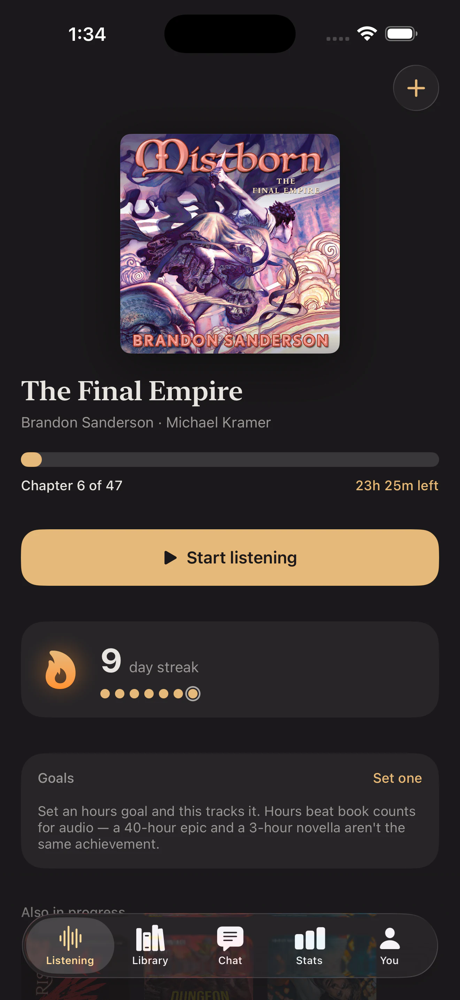
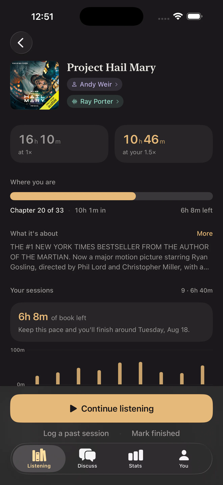
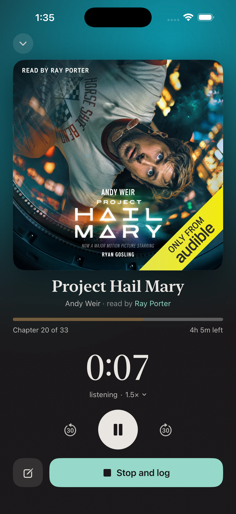
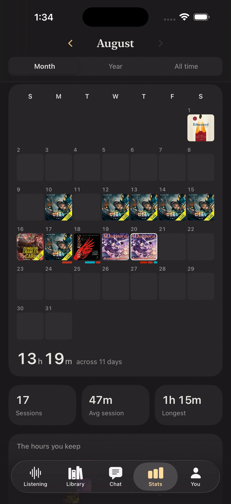
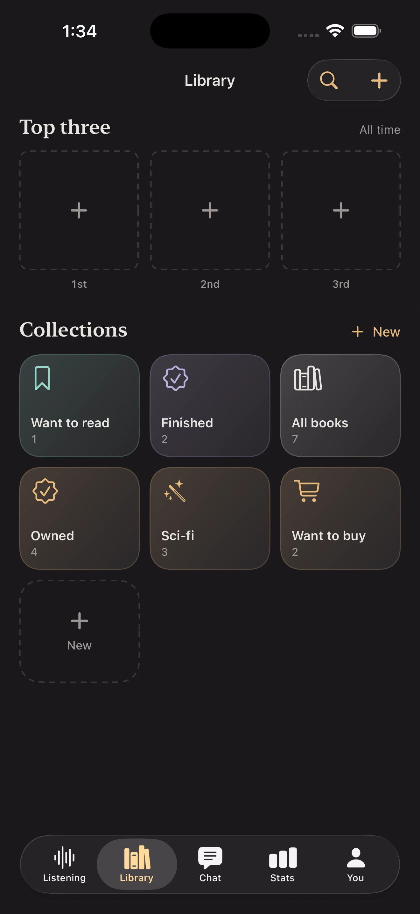
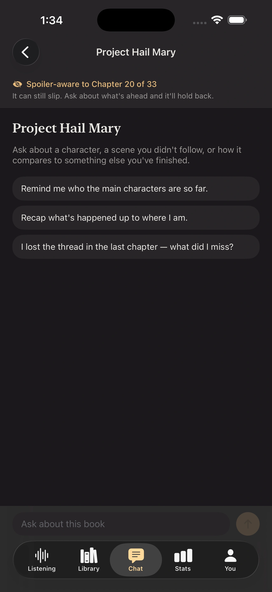

Print books, by the page
Say which page you’re on and Booktrace counts the pages down. Page counts fill in by themselves.
Print · Ebook · Audiobook
Booktrace keeps every book you read or hear in one private library—the page you’re on, the chapter you’re in, the narrator you loved, and the time that was actually yours.
Booktrace is a book and audiobook tracker for iPhone. For a paperback or ebook, say which page you’re on and it counts the pages down. For an audiobook, it follows the chapter, narrator, and playback speed. Either way, it keeps your sessions, reading time, streaks, and stats.
3-day free trial · iPhone · No account required

Right where you left it
Chapter 6 of 47 One tap to keep listeningOne library, every format
Say which page you’re on and Booktrace counts the pages down. Page counts fill in by themselves.
Kindle, Apple Books, Libby, or anywhere else. Track by page and keep the time you spent reading.
Runtime, narrator, playback speed, and real listening hours, wherever you listen.
Made for audiobooks too
Come back to the exact chapter you stopped on and know how long is left.
Remember the voices you love and explore every performance by narrator.
Booktrace quietly keeps story time and your actual listening time separate.
Built around the book
Open a book and see the page or chapter you’re on, what’s left, recent sessions, and the pace that will get you to the end. Audiobooks add the narrator and your playback speed.


A month made of books
The calendar leads with the books you actually read or heard each day, then connects them to your sessions, pages, hours, streaks, and goals.
Explore reading and audiobook listening statsthis month
across 11 listening days


Spoiler-aware chat
Ask for a recap, untangle a character, or work out what you missed. Booktrace gives the conversation your current page or chapter and asks it to stay behind you.
AI can still make mistakes. The boundary is always visible, and discussion is entirely optional.

Yours means yours
Your library, notes, and reading history stay on your iPhone. Start tracking without creating another account or turning your reading life into a social feed—and bring your Goodreads or Libby history with you in one import.
Track Audible, Libby, Spotify, and more togetherCommon questions
All three, equally. For a print book or ebook you say which page you’re on and Booktrace counts the pages down; for an audiobook it tracks chapters, narrator, and speed. Every format gets sessions, time, streaks, goals, and stats.
A tool that records what you're listening to, your progress by chapter, and the time you've actually spent listening. Booktrace does that—and tracks your print books and ebooks by page in the same library.
Booktrace is an iPhone app. Start a session with one tap or log one afterward, and it keeps your page or chapter, time, and stats instead of a journal or spreadsheet.
Yes—Booktrace keeps one listening history across Audible, Libby, Spotify, Apple Books, Everand, and other audiobook apps.
Yes. Import a Goodreads or Libby export and your shelves, ratings, finish dates, formats, and page counts come along.
No. Your library, notes, and reading history stay on your iPhone—no account and no public reading profile.
Booktrace for iPhone
Try every feature free for 3 days.